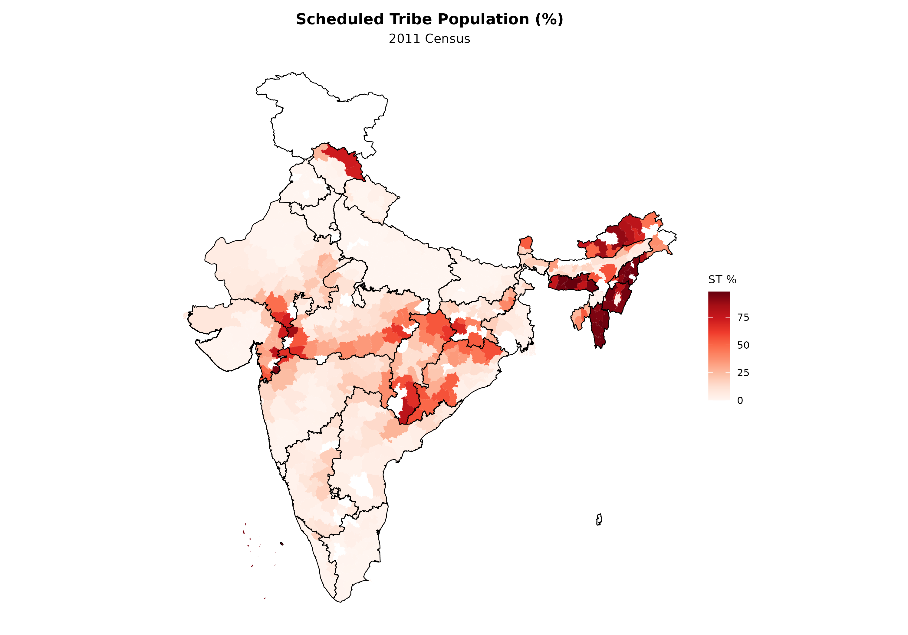
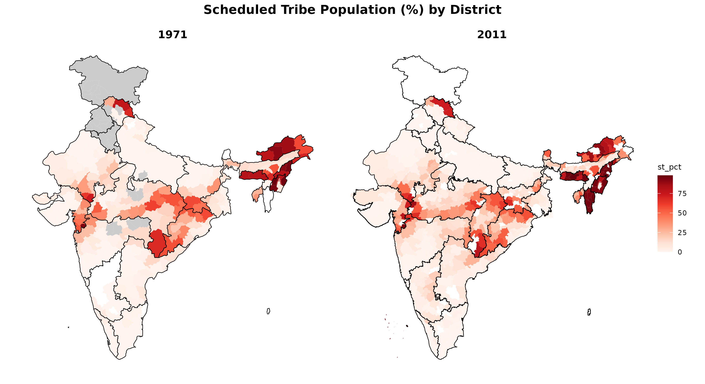

This vignette demonstrates how to visualize Scheduled Tribe (ST) populations across Indian districts.
Load data
data(census_1971)
data(census_2011_pca)
census_1971 |>
filter(geography == "district") |>
select(state, name, population_total, st_population_total) |>
mutate(st_pct = round(100 * st_population_total / population_total, 1)) |>
arrange(desc(st_pct)) |>
head(10)
#> # A tibble: 10 × 5
#> state name population_total st_population_total st_pct
#> <chr> <chr> <dbl> <dbl> <dbl>
#> 1 MANIPUR Mani… 44975 43996 97.8
#> 2 MANIPUR Mani… 62229 59926 96.3
#> 3 NAGALAND Tuen… 173003 163834 94.7
#> 4 ASSAM Mizo 332390 313299 94.3
#> 5 MANIPUR Mani… 98114 91984 93.8
#> 6 GUJARAT The … 94185 88028 93.5
#> 7 LACCADIVE, MINICOY, and A… LACC… 31810 29540 92.9
#> 8 NAGALAND Moko… 168242 153601 91.3
#> 9 ARUNACHAL PRADESH Suba… 99239 90242 90.9
#> 10 ARUNACHAL PRADESH Siang 121936 105833 86.8Prepare data
st_1971 <- census_1971 |>
filter(geography == "district") |>
mutate(st_pct = 100 * st_population_total / population_total, year = 1971L) |>
attach_geometry(1971)
st_2011 <- census_2011_pca |>
mutate(st_pct = 100 * st_population / population_total, year = 2011L) |>
attach_geometry(2011)
cat("1971: Districts with ST data:", sum(!is.na(st_1971$st_pct)), "of", nrow(st_1971), "\n")
#> 1971: Districts with ST data: 298 of 342
cat("2011: Districts with >50% ST:", sum(st_2011$st_pct > 50, na.rm = TRUE), "\n")
#> 2011: Districts with >50% ST: 75Map of 2011 ST population
plot_map(
st_2011,
fill_var = "st_pct",
title = "Scheduled Tribe Population (%)",
subtitle = "2011 Census",
legend_title = "ST %",
palette = "reds",
show_state_boundaries = TRUE
)
Comparing 1971 and 2011
compare_maps(
list("1971" = st_1971, "2011" = st_2011),
fill_var = "st_pct",
title = "Scheduled Tribe Population (%) by District",
palette = "reds",
show_state_boundaries = TRUE,
ncol = 2
)
State-level analysis
state_st_2011 <- census_2011_pca |>
group_by(state_name) |>
summarise(
total_pop = sum(population_total, na.rm = TRUE),
st_pop = sum(st_population, na.rm = TRUE),
.groups = "drop"
) |>
mutate(st_pct = 100 * st_pop / total_pop) |>
arrange(desc(st_pct))
state_st_2011 |>
head(10) |>
mutate(st_pct = round(st_pct, 1), st_pop = scales::comma(st_pop)) |>
knitr::kable(col.names = c("State", "Total Pop", "ST Pop", "ST %"))| State | Total Pop | ST Pop | ST % |
|---|---|---|---|
| Lakshadweep | 60650 | 57,321 | 94.5 |
| Mizoram | 888573 | 839,310 | 94.5 |
| Nagaland | 1990036 | 1,774,026 | 89.1 |
| Meghalaya | 2318822 | 1,992,862 | 85.9 |
| Arunachal Pradesh | 1097968 | 705,158 | 64.2 |
| Dadra and Nagar Haveli | 220490 | 137,225 | 62.2 |
| Manipur | 2166788 | 741,141 | 34.2 |
| Chhattisgarh | 20833803 | 6,616,596 | 31.8 |
| Tripura | 3199203 | 993,426 | 31.1 |
| Jharkhand | 26945829 | 7,087,068 | 26.3 |
High ST concentration districts
census_2011_pca |>
mutate(st_pct = 100 * st_population / population_total) |>
filter(st_pct > 80) |>
select(state_name, name, st_pct) |>
arrange(desc(st_pct)) |>
mutate(st_pct = round(st_pct, 1)) |>
knitr::kable(col.names = c("State", "District", "ST %"))| State | District | ST % |
|---|---|---|
| Mizoram | Serchhip * | 98.1 |
| Meghalaya | West Khasi Hills | 98.0 |
| Mizoram | Champhai * | 96.8 |
| Meghalaya | East Garo Hills | 96.5 |
| Nagaland | Phek | 96.5 |
| Mizoram | Saiha * | 96.2 |
| Nagaland | Zunheboto | 96.1 |
| Nagaland | Tuensang | 96.0 |
| Meghalaya | Jaintia Hills | 96.0 |
| Meghalaya | South Garo Hills * | 95.7 |
| Manipur | Ukhrul | 95.5 |
| Nagaland | Wokha | 95.5 |
| Mizoram | Lawngtlai | 95.4 |
| Manipur | Tamenglong | 95.4 |
| Mizoram | Lunglei | 95.3 |
| Lakshadweep | Lakshadweep | 94.5 |
| Nagaland | Mon | 93.9 |
| Mizoram | Mamit * | 93.9 |
| Nagaland | Mokokchung | 93.8 |
| Gujarat | The Dangs | 93.8 |
| Mizoram | Aizawl | 93.2 |
| Manipur | Churachandpur | 93.2 |
| Manipur | Chandel | 91.9 |
| Nagaland | Kohima | 90.5 |
| Arunachal Pradesh | Lower Subansiri | 90.1 |
| Mizoram | Kolasib * | 89.8 |
| Arunachal Pradesh | Upper Subansiri | 89.5 |
| Jammu and Kashmir | Kargil | 88.3 |
| Meghalaya | Ri Bhoi * | 87.0 |
| Madhya Pradesh | Jhabua | 86.8 |
| Arunachal Pradesh | East Kameng | 86.7 |
| Arunachal Pradesh | Tirap | 83.7 |
| Jammu and Kashmir | Leh (Ladakh) | 82.0 |
| Arunachal Pradesh | West Siang | 81.7 |